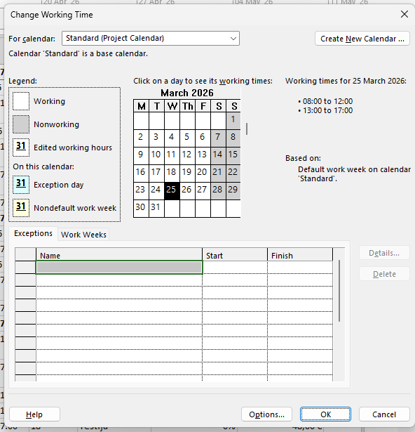
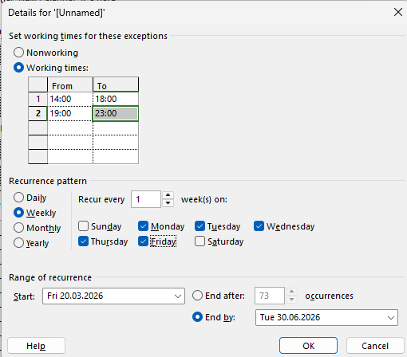

01
Ava Change Working Time
Käivita Microsoft Project. Klõpsa ülaribalt vahekaardile Project ning vali sealt Change Working Time (Muuda tööaega). Avaneb dialoogaken, kus saad hallata kõiki olemasolevaid kalendreid.

Samm-sammuline juhend kalendri loomiseks, tööaegade muutmiseks ja kalendri kasutamiseks projektis.
Käivita Microsoft Project. Klõpsa ülaribalt vahekaardile Project ning vali sealt Change Working Time (Muuda tööaega). Avaneb dialoogaken, kus saad hallata kõiki olemasolevaid kalendreid.
Klõpsa nuppu Create New Calendar. Anna kalendrile nimi (nt Minu kalender). Vali, kas soovid aluseks võtta standardse kalendri (Make a copy of Standard calendar) või alustada tühja kalendriga (Create new base calendar). Kinnita OK-ga.

Vali kalendrivaates soovitud päev/päevad. Vahekaarti Work Weeks kasutades saad määrata erinevaid töönädalaid. Klõpsa Details ja sea tööajad (nt 09:00–17:00). Salvestamiseks klõpsa OK.

Klõpsa vahekaarti Exceptions. Sisesta eripäeva nimi (nt Jõulupuhkus) ja kuupäev. Vajuta Details, et täpsustada, kas tegemist on puhkepäeva või erineva tööajaga. Kinnita OK.

Mine Project → Project Information. Vali ripploendist Calendar oma loodud kalender. Klõpsa OK. Nüüd arvutab MS Project kõik tähtajad ja kestused sinu määratud tööaegade alusel. Lisaks saad üksikutele ressurssidele eraldi kalendreid määrata ressursitabelis.

Kalender määrab, millised päevad ja tunnid loetakse tööajaks. Kui ülesande kestus on 2 päeva, arvestab MS Project ainult tööpäevi — nädalavahetused ja eripäevad vahele jäetakse. See tähendab, et õige kalendri valimine on kriitilise tähtsusega täpse projektiajakava saamiseks.